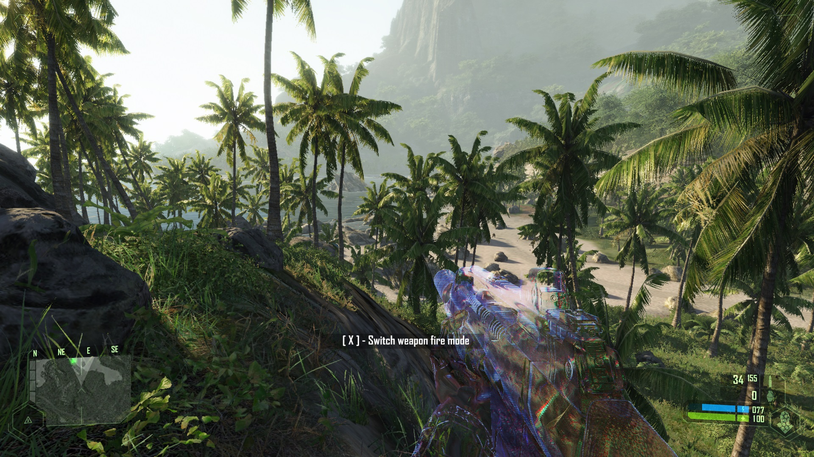
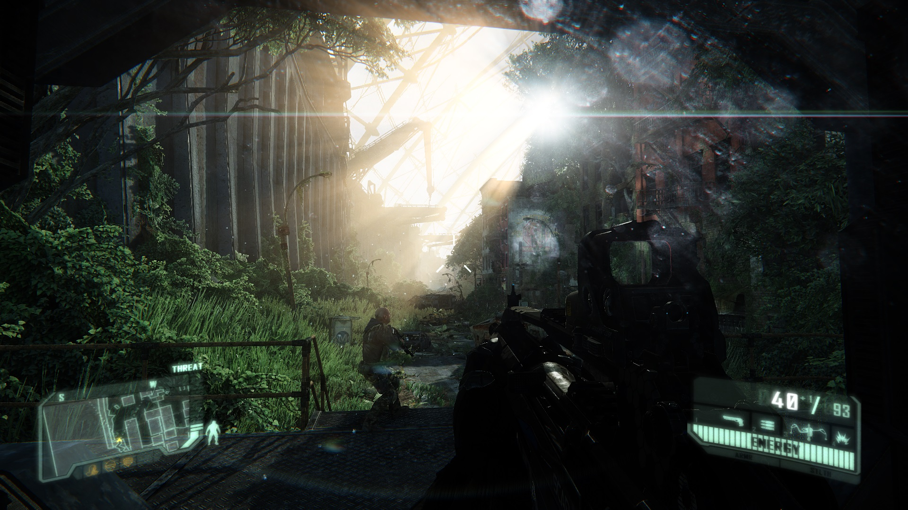
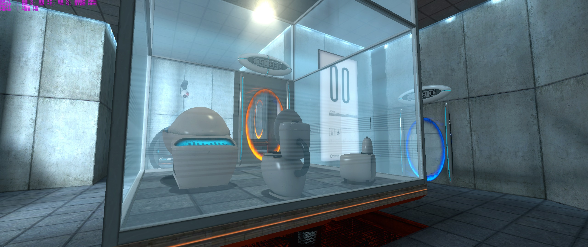
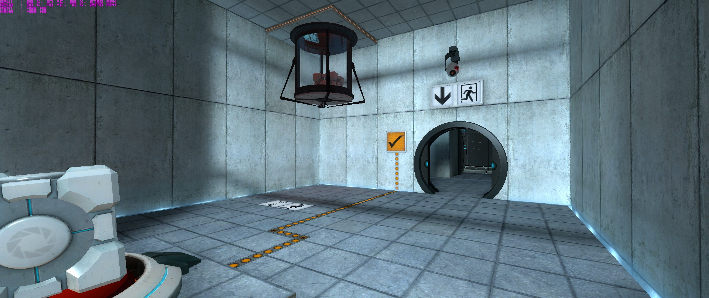
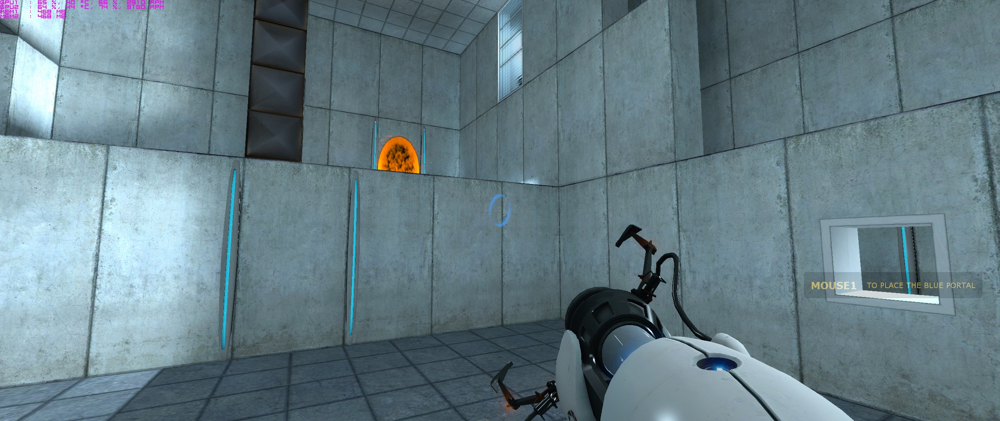

10) Rise of the Tomb Raider
I really enjoyed playing the 2013 Reboot of Tomb Raider. Sure the gameplay was a bit clunky here and there, but it was still a good game. Rise of the Tomb Raider is a lot better. The gameplay
feels a lot more polished and the story line is really good. Sure there was still some parts where Lara did not want to go where I told her to, for example, I would tell her to jump up and she
would jump off the side to her death. Apart from these problems the game was a very good, the story line was great, the character
narrative was amazing and the atmosphere and graphics for the game
was another great point of the game. If you are a fan of the Tomb Raider series and have played the 2013 reboot then this game is highly
recommended.
Link To Game on Amazon |
Link To PCGamer Review |
Link To Top 3 Mods


9) Battlefield - Bad Company 2
The Battlefield series has always been a favorite of mine. But what I think is the best one out of them all is Battlefield Bad Company 2. Not only did it increase the realism of the game it
had a really good story line. BC2 is the game I have played the most out of the series, I did play and enjoy Battlefield 3 and 4 but I did not enjoy the story and gameplay as much as BC2.
Battlefield Bad Company 2 not only has a good story but the gameplay and the graphics and gameplay are amazing as well. The physics are great, for example, you can throw a grenade into a building
and when the grenade goes off, the building will crumble down. This is a highly recommended game for Battlefield fans.
Link To Game on Amazon |
Link To IGN Review |
Link To Top 3 Mods
8) Far Cry 3
Far Cry 3 is the best Far Cry game I have played. However, I have only played 2, 3 and 4 but I still think it is a great game. Far Cry 3 has everything you want from a game, guns,
free roam,
a tropical setting and even a crazy guy running the island. The story is great but not the main point of the game. The main point of the game is kind of like Just Cause just with less explosions.
Which is to liberate areas, survive by killing and gutting animals, finding things on the island and so on. There is only one bad point I have to say about this game and that is that after you have
played it doing the same thing like liberating camps, it does get repetitive after a long while. However, the gameplay is very fun and it is a
highly recommended game and a great addition to the Far
Cry series.
Link To Game on Amazon |
Link To PCGamer Review |
Link To Top 3 Mods
7) Crysis Series (1, Warhead, 2, 3)
The Crysis series is one of my most favorite FPS games on PC and it was one of my first games that I did play on my PC. Not only are the graphics amazing but also the gameplay is amazing and unique.
The levels follow the idea of do the mission yourself, thanks to the Nanosuit you have all of the information you need to execute the mission in the most affective way. The Nanosuit is also another
unique aspect of gameplay, not only do you have armour but you have speed,
strength and the best part of the suit is the cloak, which makes you
effectively invisible. The best Crysis games are 1 and
Warhead. 2 was alright but it did take the linear approach in the levels. 3 was a lot better and had a more emotional story line.
Link To Game on Steam |
Link To IGN Review |
Link To Top 3 Mods


6) Portal
I started off being a valve fan when I played Half-Life 2 on my laptop back in 2009. I loved Half Life 2 to bits. However, for some reason I did not play Portal until very recently, but as soon as I
played it I was hooked on the game. Portal is amazing, with great and unique gameplay, great graphics and even better and more unique characters. The puzzles are great, everyone is unique and has a
challenging aspect to it. I will say one downside to the game, which is there are not many levels, so it does not take long to complete the
game if you are good at puzzles, however, you will be going
back to the game over and over again. And there are levels that the community can create, so this does add some more content to the game. The soundtrack is another great thing about this game, Valve
have always done a great job with the past soundtracks like Half-Life, but the Portal soundtrack is better, especially the end credits song. IF you love Half-Life, Team Fortress and Left 4 Dead, then
this game is a big recommendation, along with its sequel Portal 2.
Link To Game on Steam |
Link To IGN Review |
Link To Top 3 Mods


